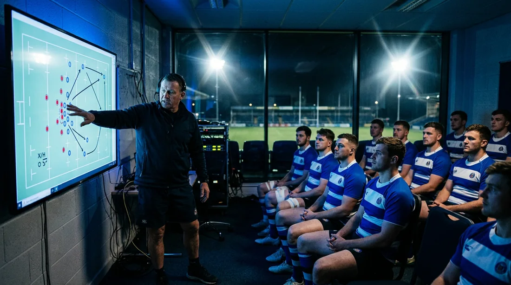

Team Moves
Move library
No moves yet
Add your first move by copying the template insrc/data/team-moves.js.
Put any video, diagram or animation in public/media/, then rebuild.

Add your first move by copying the template insrc/data/team-moves.js.
Put any video, diagram or animation in public/media/, then rebuild.